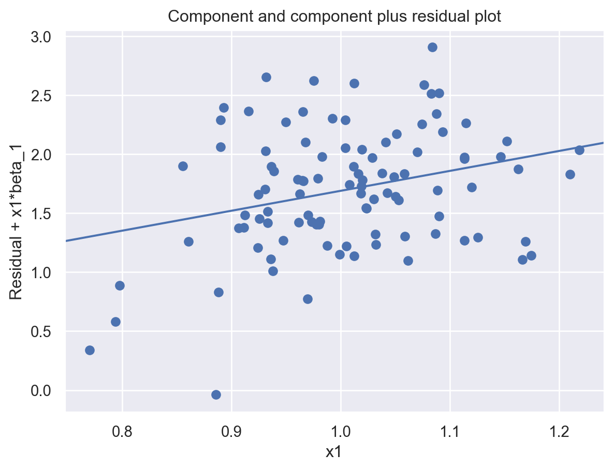
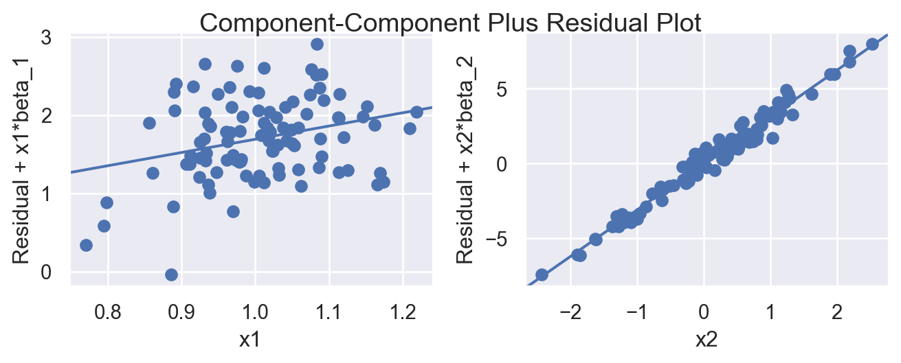
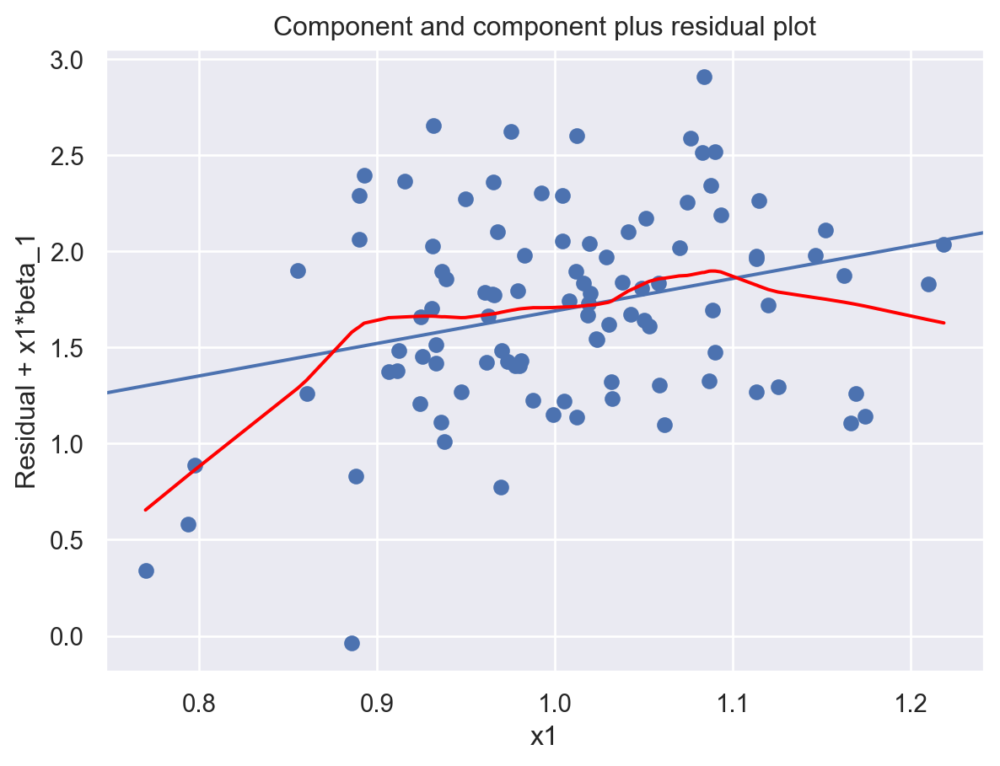
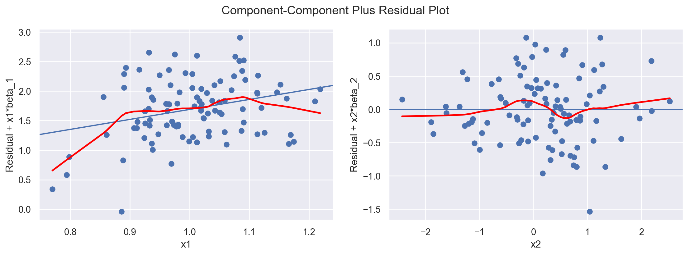

import numpy as np
import pandas as pd
np.random.seed(1)
n = 100
x1 = np.random.normal(1, 0.1, size=n)
x2 = np.random.normal(0, 1, size=n)
y = 1 + 2 * x1 + 3 * x2 + np.random.normal(0, 0.5, size=n)
X = pd.DataFrame({'x1': x1, 'x2': x2})2 Linear Regression
\[ \require{physics} \require{braket} \]
\[ \newcommand{\dl}[1]{{\hspace{#1mu}\mathrm d}} \newcommand{\me}{{\mathrm e}} \newcommand{\argmin}{\operatorname{argmin}} \newcommand{\rss}{\mathrm{RSS}} \newcommand{\ols}{\mathrm{OLS}} \newcommand{\mle}{\mathrm{MLE}} \]
$$
$$
\[ \newcommand{\pdfbinom}{{\tt binom}} \newcommand{\pdfbeta}{{\tt beta}} \newcommand{\pdfpois}{{\tt poisson}} \newcommand{\pdfgamma}{{\tt gamma}} \newcommand{\pdfnormal}{{\tt norm}} \newcommand{\pdfexp}{{\tt expon}} \]
\[ \newcommand{\distbinom}{\operatorname{B}} \newcommand{\distbeta}{\operatorname{Beta}} \newcommand{\distgamma}{\operatorname{Gamma}} \newcommand{\distexp}{\operatorname{Exp}} \newcommand{\distpois}{\operatorname{Poisson}} \newcommand{\distnormal}{\operatorname{\mathcal N}} \]
This section offers a brief review of linear regression, with the main emphasis on its Python implementation through examples.
2.1 Quick Overview
Linear regression is the fundamental supervised learning method for a quantitative response. It models the conditional mean of the response as a linear function of the predictors: \[ y = \beta_0 + \beta_1 x_1 + \cdots + \beta_p x_p + \varepsilon. \]
In matrix notation, this can be written as \[ \vb y = \vb X\beta + \varepsilon. \] Here, \(\vb X\) is the design matrix, whose first column is a column of ones representing the intercept.
2.2 The Ordinary Least Squares Estimator
The most common fitting method is ordinary least squares (OLS). It chooses the coefficient vector \(\beta\) that minimizes the residual sum of squares (\(\rss\)):
\[ \rss(\beta) = \sum_{i=1}^n (y_i - \hat{y}_i)^2 = \norm{\vb y - \vb X\beta }_2^2. \]
Theorem 2.1 (OLS Estimator) The coefficient vector that minimizes \(\rss\) is \[ \hat{\beta}_{\ols} = (\vb X^\top \vb X)^{-1}\vb X^\top \vb y, \] provided that \(\vb X^\top \vb X\) is invertible. This estimator is called the ordinary least squares (OLS) estimator.
Once the coefficients are estimated, the fitted value for observation \(i\) is
\[ \hat{y}_i = \hat{\beta}_0 + \hat{\beta}_1 x_{i1} + \cdots + \hat{\beta}_p x_{ip}. \]
Interpretation is one of the main advantages of linear regression compared with many more complex models.
- The coefficient \(\beta_j\) describes how the predicted response changes when \(x_j\) increases by one unit, while the other predictors are held fixed.
- When interaction terms are present, a main effect cannot be interpreted in isolation. The effect of a predictor depends on the values of the variables with which it interacts.
- If predictors are centered so that \(0\) corresponds to the average of the original variable, the intercept represents the predicted response at the average predictor levels.
2.3 Assessing Model Fit
In linear regression we want to understand how well a model explains the data and how well it is expected to perform on new observations.
Classical regression focuses heavily on checking model assumptions, such as independence of errors, constant variance, and approximate normality. Various diagnostic tools—such as residual plots, Q-Q plots, and leverage statistics—are commonly used to examine whether these assumptions are reasonable.
In statistical learning, however, the primary goal is predictive performance rather than formal inference. As a result, these diagnostic tools play a secondary role. While they can still help reveal serious problems such as nonlinearity or influential observations, the main evaluation of a model is based on how well it predicts new data.
2.3.1 Training Error and Test Error
Definition 2.1 (Training Error) The training error measures how well a model fits the training data.
Definition 2.2 (Test Error) The test error measures prediction error on new observations not used to fit the model.
For example, for a fitted model, we can measure its performance using the mean squared error (MSE). The training MSE measures how well the model fits the training data: \[ \text{MSE}_{train}=\frac{1}{n}\sum_{i=1}^{n}(y_i-\hat y_i)^2 . \]
However, a model that fits the training data very well may perform poorly on new observations. The more relevant quantity is the test MSE, which measures prediction error on new data drawn from the same population.
The goal of statistical learning is to build models with small test error, not merely small training error.
Definition 2.3 (Overfitting) Overfitting occurs when a model fits the training data very closely but fails to generalize well to new data. In this case, the model captures random noise or idiosyncrasies in the training sample rather than the underlying relationship.
Model selection methods attempt to balance model complexity and prediction accuracy in order to avoid overfitting.
Note
Prediction error can be decomposed conceptually into two components: bias and variance. Simple models may have high bias but low variance, while very flexible models may have low bias but high variance. Model selection aims to balance these two effects to minimize prediction error. This part will be discussed in more details in later sections.
NoteInformation Criteria and Estimated Test Error
Classical regression tends to estimate expected test error using only training data. These criteria reward good fit but penalize models with many predictors.
Some commonly used criteria are:
- AIC (Akaike Information Criterion)
- BIC (Bayesian Information Criterion)
- Mallows’ \(C_p\)
Although these criteria are useful for model comparison, they still rely on approximations derived from the training sample.
2.3.2 Trainning set, Test set and Validation set
Instead of estimating test performance indirectly from the training data, we can evaluate a model more directly by using data that were not used to fit the model. This leads to the idea of data splitting:
The dataset is divided into two parts:
- Training set: used to fit the model.
- Test set: used to evaluate prediction performance.
After fitting the model on the training set, predictions are made on the test set, and performance measures such as MSE are computed.
This provides a more realistic estimate of how the model performs on new data.
In many situations we also need to choose between several competing models or tuning parameters. To avoid using the test data for model selection, a third subset is often introduced.
- Training set: used to fit models.
- Validation set: used to compare models and select tuning parameters.
- Test set: used only once at the end to estimate the final model’s performance.
This separation helps prevent overly optimistic performance estimates.
2.3.3 Cross-Validation
When the dataset is not large, splitting the data into separate training, validation, and test sets may leave too little data for model fitting. In such cases, cross-validation is commonly used to estimate validation performance more efficiently.
The most common form is \(k\)-fold cross-validation.
- The available training data are divided into \(k\) roughly equal parts (called folds).
- For each fold:
- The model is trained on \(k-1\) folds.
- The remaining fold is used as a validation set.
- This process is repeated \(k\) times so that each fold serves once as the validation set.
- The validation errors from all folds are averaged to estimate the model’s expected test error.
Cross-validation is primarily used to estimate test error or to compare competing models. When it is used for model selection, two additional steps are typically performed. Note that cross-validation uses only the training data and does not involve the test set.
- After the best model configuration has been selected, the model is retrained on the entire training data.
- The final model is then evaluated once on the test set, providing an unbiased estimate of its performance on new data.
2.4 Python code
There are many Python libraries that can fit linear regression models. In this course we use scikit-learn as the primary modeling tool, with support from pandas/numpy for data manipulation and matplotlib/seaborn for visualization.
To demonstrate the code we use a generated dataset with 2 predictors and 1 response variable, while \(\beta_0=1\), \(\beta_1=2\) and \(\beta_2=3\).
When using sklearn, a dataset is typically represented by features X and a target variable y.
Xusually has 2 dimensions (number of samples × features).yis usually 1 dimensional, though it may also be represented as a 2 dimensional vector with only one column.
Both X and y can be stored as either numpy arrays or pandas objects.
In this example we construct X as a DataFrame, since column names make it easier to modify variables during the model-building stage, e.g. when adding interactions or transformations.
2.4.1 Regular linear models
from sklearn.linear_model import LinearRegression
model = LinearRegression()
model.fit(X, y)
print(f"intercept: {model.intercept_}")
print(f"coefficients: {model.coef_}")intercept: 1.2995891152586192
coefficients: [1.69051379 3.10918568]We could use the fitted model to generate predictions and compute residuals.
y_pred = model.predict(X)
res = y - y_pred2.4.2 Measure the performance
sklearn provide many measures. You can find most of them from sklearn.metrics. Here we consider the following. The general syntax is metric(y_true, y_pred).
from sklearn.metrics import mean_squared_error, r2_score, root_mean_squared_error
y_pred = model.predict(X)
print(f"MSE: {mean_squared_error(y, y_pred)}")
print(f"R2: {r2_score(y, y_pred)}")
print(f"RMSE: {root_mean_squared_error(y, y_pred)}")2.4.3 Model Diagnostics
Even though statistical learning primarily focuses on prediction, it is still useful to examine diagnostic plots to detect potential problems in the model. These problems may reduce predictive performance or suggest that additional feature engineering is needed.
In Python there are no single function that automatically handles everything. You need to manually set up each piece using a stack of tools from different libraries. In this notes we focus on the basic tools, that are statsmodels, scipy, seaborn and matplotlib.
By the way, we could always use seaborn’s theme to make the plots from matplotlib related tools prettier.
import seaborn as sns
sns.set_theme()We will compute some qualities for the residual analysis. Although we mainly focus on sklearn, in order to perform residual analysis, we need help from statsmodels. Therefore we need a statsmodels model to hold the data. Since we already have the feature matrix and the target maxtrix, the fastest way to use statsmodels is through its statsmodels.api (comparing to the R style routine statsmodels.formula.api).
import statsmodels.api as sm
X_sm = sm.add_constant(X)
model = sm.OLS(y, X_sm).fit()
model.paramsconst 1.299589
x1 1.690514
x2 3.109186
dtype: float64The fitted values, the residuals as well as leverage, cook’s distance etc. can be directly extracted from this model object. We wrap them into DataFrames for plots.
y_pred = model.fittedvalues
res = model.resid
model_output = pd.DataFrame({"y_true": y, "y_pred": y_pred, "res": res})influence = model.get_influence()
std_resid = influence.resid_studentized_internal
sqrt_std_resid = np.sqrt(np.abs(std_resid))
leverage = influence.hat_matrix_diag
cooks = influence.cooks_distance[0]
df_diag = pd.DataFrame({"leverage": leverage, "std_resid": std_resid, "sqrt_std_resid": sqrt_std_resid, "cooks": cooks})
NoteResidual plots
If we use seaborn for plotting, we could get more information being computed autmoatically. For example lowess=True can show the smooth curve.
import seaborn as sns
import matplotlib.pyplot as plt
sns.regplot(
data=model_output,
x="y_pred",
y="res",
lowess=True,
scatter_kws={"alpha": 0.6},
line_kws={"color": "red", "linestyle": "--"},
)
plt.axhline(0, linestyle="--")
NoteQ-Q plot
import scipy.stats as stats
stats.probplot(res, dist="norm", plot=plt);
NoteScale-lcation plot
import numpy as np
sns.scatterplot(x=y_pred, y=sqrt_std_resid, data=df_diag)
sns.regplot(x=y_pred, y=sqrt_std_resid, data=df_diag, lowess=True, scatter=False, line_kws={"color": "red"})
plt.xlabel("Fitted values")
plt.ylabel("√|Standardized residuals|")
plt.title("Scale-Location");
NoteLeverage with Cook’s distance
sns.scatterplot(x=leverage, y=std_resid, data=df_diag, size=cooks, sizes=(20, 200), alpha=0.7)
plt.axhline(0, linestyle="--", color="gray")
plt.xlabel("Leverage")
plt.ylabel("Standardized Residuals")
plt.title("Residuals vs Leverage");
NotePartial residual plots
sm.graphics.plot_ccpr(model, "x1")

sm.graphics.plot_ccpr_grid(model)

from statsmodels.nonparametric.smoothers_lowess import lowess
fig = sm.graphics.plot_ccpr(model, "x1")
ax = fig.axes[0]
x = ax.lines[0].get_xdata()
y = ax.lines[0].get_ydata()
smooth = lowess(y, x, frac=0.5)
ax.plot(smooth[:, 0], smooth[:, 1], color="red")
import statsmodels.api as sm
import matplotlib.pyplot as plt
from statsmodels.nonparametric.smoothers_lowess import lowess
# fit model
X_sm = sm.add_constant(X)
model = sm.OLS(y, X_sm).fit()
# draw all CCPR plots
fig = sm.graphics.plot_ccpr_grid(model)
fig.set_size_inches(12, 8)
# add LOWESS smooth line to each subplot
for ax in fig.axes:
if len(ax.lines) == 0:
continue
# the first line in each CCPR plot contains the component+residual data
x = ax.lines[0].get_xdata()
y = ax.lines[0].get_ydata()
smooth = lowess(y, x, frac=0.5)
ax.plot(smooth[:, 0], smooth[:, 1], color="red", linewidth=2)
plt.tight_layout()
plt.show()
2.5 Feature engineering
Feature engineering refers to modifying or creating predictors in order to better represent the relationship between the predictors and the response. In linear regression, the model is linear in the coefficients, but the predictors themselves can be transformed. By constructing appropriate features, a linear model can capture nonlinear relationships and interactions between variables.
Common types of feature engineering include
- polynomial terms,
- interaction terms,
- transformations of variables,
- encoding categorical variables.
The naive way to generate terms is to directly modify the feature matrix X. For example, assuming we are adding the squared term of \(x_2\) and the interaction term \(x_1x_2\).
X["x2_sq"] = X["x2"] ** 2
X["x1_x2"] = X["x1"] * X["x2"]
model2 = LinearRegression()
model2.fit(X, y)
print(f"intercept: {model2.intercept_}")
print(f"coefficients: {model2.coef_}")intercept: -0.004397304202021468
coefficients: [ 0.00443709 0.02563927 0.00013813 -0.02548071]
Note
Although the model is called linear regression, it can represent nonlinear relationships by including transformed predictors such as \(x^2\), \(\log x\), or \(\sqrt{x}\). The model remains linear because it is linear in the coefficients \(\beta\).
NotePolynomial Features
When many predictors are present, manually creating polynomial and interaction terms can become tedious. In such cases we can use PolynomialFeatures from sklearn.preprocessing, which automatically generates polynomial and interaction terms up to the specified degree.
import numpy as np
X_original = np.arange(6).reshape(3, 2)
X_originalarray([[0, 1],
[2, 3],
[4, 5]])from sklearn.preprocessing import PolynomialFeatures
poly = PolynomialFeatures(degree=2, interaction_only=False, include_bias=True)
poly.fit_transform(X_original)array([[ 1., 0., 1., 0., 0., 1.],
[ 1., 2., 3., 4., 6., 9.],
[ 1., 4., 5., 16., 20., 25.]])The argument interaction_only=False means that both squared terms and interaction terms are included. For example, if the original variables are \(x_1\) and \(x_2\), then the transformed matrix contains terms such as \[
1,x_1,x_2,x_1^2,x_1x_2,x_2^2.
\]
poly2 = PolynomialFeatures(degree=2, interaction_only=True, include_bias=False)
poly2.fit_transform(X_original)array([[ 0., 1., 0.],
[ 2., 3., 6.],
[ 4., 5., 20.]])Here interaction_only=True means that only interaction terms are added, while powers such as \(x_1^2\) and \(x_2^2\) are excluded. Also, include_bias=False means that the constant column of 1’s is not included.
2.5.1 Categorical data
df = pd.DataFrame({"color": ["red", "blue", "green", "red"]})
pd.get_dummies(df, drop_first=True)| color_green | color_red | |
|---|---|---|
| 0 | False | True |
| 1 | False | False |
| 2 | True | False |
| 3 | False | True |
from sklearn.preprocessing import OneHotEncoder
encoder = OneHotEncoder(drop="first")
X_cat = encoder.fit_transform(df[["color"]])
NoteDummy Variable Trap
Including all dummy variables together with an intercept creates perfect multicollinearity because the dummy variables sum to one. Therefore when creating dummy variables with \(k\) categories, we only create \(k-1\) variables.
X = pd.DataFrame({"x": [1, 2, 3, 4, 5, 6], "group": ["A", "A", "B", "B", "C", "C"]})
pd.get_dummies(X, drop_first=True)| x | group_B | group_C | |
|---|---|---|---|
| 0 | 1 | False | False |
| 1 | 2 | False | False |
| 2 | 3 | True | False |
| 3 | 4 | True | False |
| 4 | 5 | False | True |
| 5 | 6 | False | True |
.get_dummies() will automatically detect categorical variables and change them into dummy variables. If you want to convert some numeric variables into dummy variables, you may manually cast them into categorical variables.
The argument drop_first=True means that we want to remove the base value column. Due to the
X["x"] = X["x"].astype("category")
pd.get_dummies(X, drop_first=True)| x_2 | x_3 | x_4 | x_5 | x_6 | group_B | group_C | |
|---|---|---|---|---|---|---|---|
| 0 | False | False | False | False | False | False | False |
| 1 | True | False | False | False | False | False | False |
| 2 | False | True | False | False | False | True | False |
| 3 | False | False | True | False | False | True | False |
| 4 | False | False | False | True | False | False | True |
| 5 | False | False | False | False | True | False | True |
from sklearn.preprocessing import OneHotEncoder
X = pd.DataFrame({"group": ["A", "A", "B", "B", "C", "C"]})
encoder = OneHotEncoder(drop="first", sparse_output=False)
encoder.fit_transform(X)array([[0., 0.],
[0., 0.],
[1., 0.],
[1., 0.],
[0., 1.],
[0., 1.]])It will convert each column into dummy variables if you have multiple rows. In the below example the first 5 columns belong to x and the last 2 columns belong to group. You may compare the result with the pd.get_dummies() version.
X = pd.DataFrame({"x": [1, 2, 3, 4, 5, 6], "group": ["A", "A", "B", "B", "C", "C"]})
encoder = OneHotEncoder(drop="first", sparse_output=False)
encoder.fit_transform(X)array([[0., 0., 0., 0., 0., 0., 0.],
[1., 0., 0., 0., 0., 0., 0.],
[0., 1., 0., 0., 0., 1., 0.],
[0., 0., 1., 0., 0., 1., 0.],
[0., 0., 0., 1., 0., 0., 1.],
[0., 0., 0., 0., 1., 0., 1.]])In order to only choose some columns to transform, we may use ColumnTransformer.
from sklearn.compose import ColumnTransformer
preprocess = ColumnTransformer(
transformers=[
("cat", OneHotEncoder(drop="first", sparse_output=False), ["group"]), ("num", "passthrough", ["x"])
]
)
preprocess.fit_transform(X)array([[0., 0., 1.],
[0., 0., 2.],
[1., 0., 3.],
[1., 0., 4.],
[0., 1., 5.],
[0., 1., 6.]])Note that you may switch the order of columns when constructing ColumnTransformer.
2.5.2 Train-test split
2.5.3 Cross validation
2.5.4 Pipeline
In many modeling workflows, several steps must be performed before fitting the model. These steps may include
- feature transformations,
- scaling variables,
- generating polynomial features.
A pipeline combines these steps into a single object. Using pipelines helps ensure that the same transformations are applied consistently during training and prediction.
Example 2.1 (Generating polynomial features and then fit a model)
Note
Pipelines are particularly useful when combined with cross-validation and hyperparameter tuning, since they ensure that preprocessing steps are applied within each training fold.